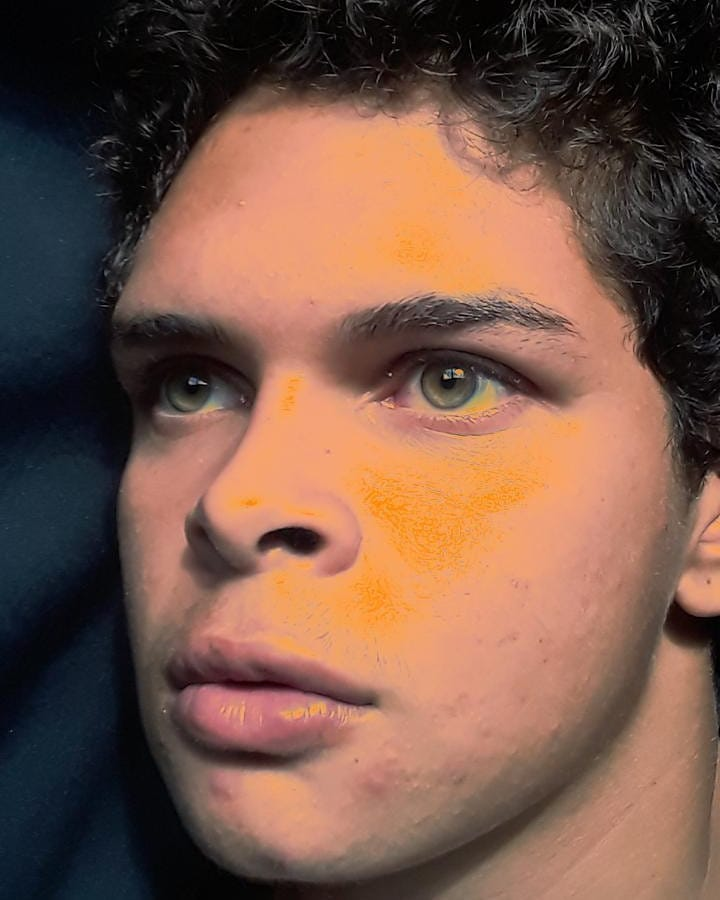
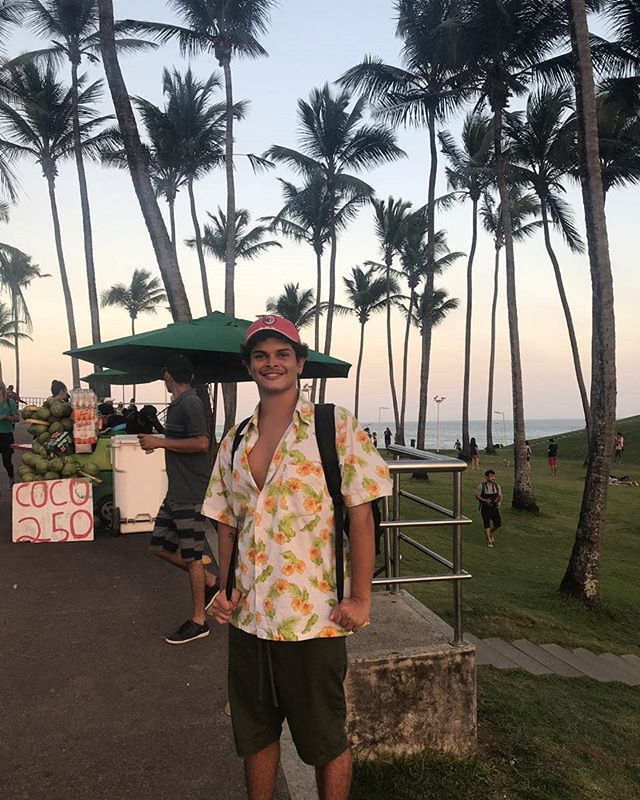
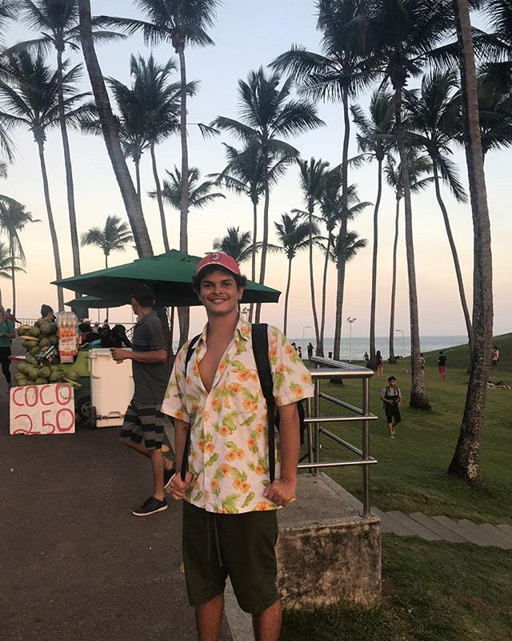

 

Sobre mim
Um profissional focado em: programação front-end + designer UX/UI + Web Design. Fascinado pela tecnologia e em criar experiências valiosas, úteis e agradáveis SEMPRE focadas no usuário, por isso, costumo mergulhar em todo o escopo de um projeto. perfeccionista, curioso, autêntico, criativo e preocupado com a qualidade das entregas para poder melhorar sempre. Gosto de colocar minhas mãos em todo o escopo de um projeto, desde pesquisa, arquitetura da informação, criação da interface com ferramentas de design UI e os testes de usabilidade. Possuo conhecimentos acerca do desenvolvimento web, no meu currículo você pode consultar as minhas competências na área.
Fora do trabalho
Apaixonado pela leitura e dos devaneios da mente ao embarcar na viagem de um autor. Eu amo história-geral, romances, distopias e tantos outros estilos. Então, sempre vou está com um livro e procurar algum espaço na agenda para debruçá-lo.
Conseguir assistir as quase 9 centenas de One Piece não é uma tarefa para qualquer um, essa obra-prima do Eichiiro Oda nunca decepciona e entra no clichê. Além dele, eu amo todas as obras do Studio Ghibli, Hunter x Hunter, Made in Abyss, etc...
Curiosidades
Personalidade INFJ: Empático, criativo, íntegro, focado e perfeccionista.
Acredito na tecnologia como ferramenta de transformação social.
Competências:
Pesquisa do Usuário.
Habilidades de Ilustração.
Ferramentas de design de interface - Figma, Adobe XD e inVision.
HTML, CSS e Java Script.
Formação:
Técnico em Desenvolvimento de Sistemas - SENAI.
Completo em Jun de 2019.
Tecnólogo em Análise e Desenvolvimento de Sistemas - IFBA Salvador.
Out de 2019 - Out de 2022.